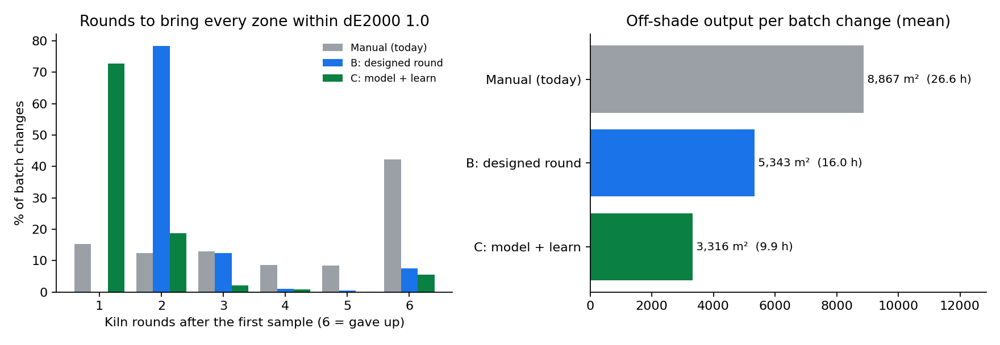
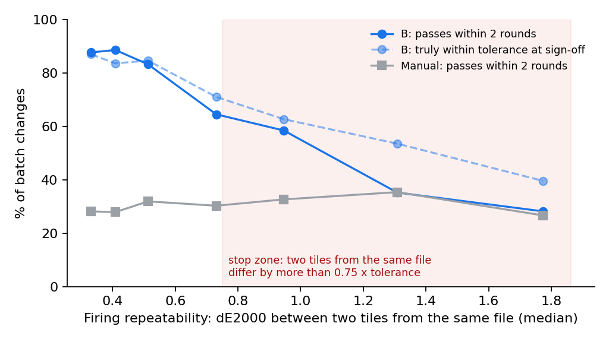
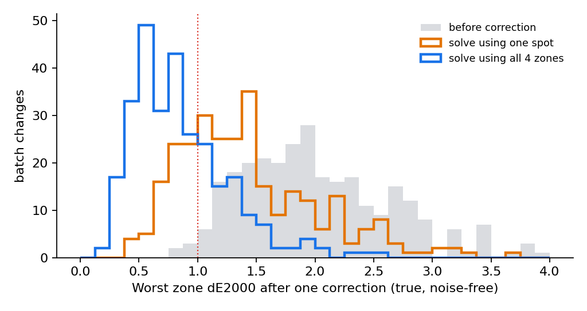

Client A, ceramic tiles · Forward Deployed Engineer case study · prepared after discovery call 1 · 3 Oct 2026
The short version. The client asked for a vision system that compares the master tile with a production tile and says what to change in the print file. They already have the comparison: their lab spectrophotometer gives ΔL, Δa, Δb today. What they lack is the translation from a colour difference into a file change that works for this batch. Today they guess that translation one channel at a time, which costs 6–7 hours per kiln round and thousands of m² of off-shade tiles.
Their lab already runs the experiment every round, and throws the answer away. I propose that the 6–7 variant tiles they already print per lab round become a designed experiment: the current file, plus each ink channel nudged once. One kiln pass then measures how this batch responds to each ink, and a small solver gives the correction for every colour zone at once. No new hardware, no change to the printer, and QC still signs off. In a simulation of 400 batch changes, the share fixed within two rounds rises from 28% to 78% on day one, and to 92% once three months of logged rounds train a prior model. Mean off-shade output per batch change falls from ~8,900 m² to ~5,300 m² (and ~3,300 m² later).
Two honest limits. A decision in minutes is achievable, but one kiln pass can't be skipped, because the colour forms in the kiln. And the whole idea fails if the kiln can't repeat itself, so that is the first thing the pilot measures (week 2), with a stop rule.
What they asked for, and what they need.
| They asked for | What they actually need | Why the difference matters |
|---|---|---|
| A video / vision analytics system comparing master and production tile | A measured inverse: from ΔLab to a file change, valid for the current batch | Measurement is not the bottleneck. Their spectro already does it better than a camera on a glossy, textured tile. |
| A fix in minutes rather than hours | Fewer kiln rounds at batch change. The cost is off-shade m² produced while they iterate. | Each round is a kiln pass (~1 h in the kiln, 6–7 h door to door). Compute time is irrelevant, and rounds are what matter. |
| Advice on how much to change the input file | Changes applied to the original master file, from a stored numeric master | They correct already-corrected files (they suspect a reference set years ago has drifted well off). Every round adds to that drift. |
| A system that works on the line | A tool used once per batch change in the lab | They told us that once a batch's first sample is right, the rest of the batch runs fine. |
| (unstated) | Sign-off on numbers, not eyes | They told us different people judge shade differently, and near-misses sometimes get accepted. |
Stakeholders and what each needs to hear.
| Who | Role in the deal | What they need from us |
|---|---|---|
| Special Projects Lead, Procurement (did most of the talking) | Champion. Has to show internally that it can be done. | A proof on their tiles within weeks. A low fixed price. A clear stop point. |
| Head of IT & OT Procurement | Vendor risk, hardware, OEMs, site deployment | No new hardware for the pilot. Nothing writes to the printer. It runs on a lab PC on site. We can get people to the UAE plant. |
| Plant QC / lab team (not on the call: the real users) | Run the loop today and own the judgement | Fewer re-fires. They keep the sign-off. The tool shows its working ("brown +9%"), not a black box. |
| Design team | Owns print files and Photoshop edits | Original files are never overwritten. Every correction can be traced and undone. |
| Plant / production manager | Line uptime, off-shade m² | No extra kiln slots. Fewer m² downgraded. |
| Printer OEM / ink supplier | Controls RIP, warranty; may sell a competing colour management tool | We stay vendor-neutral and touch only files, never the machine. |
As-is process (from the notes). Production target set → the printer holds the reference image (the last run's sample + the master) → first sample printed and fired → lab compares it with the master (spectro ΔL Δa Δb, plus eye) → pass: run the batch → fail: someone edits the file in Photoshop (one of 6 colour channels, e.g. raising brown by a few percent) and makes 6–7 variants → print, fire, measure → repeat until it matches or is close enough → the line keeps running throughout: 5,000–10,000 m² in the wrong shade (audio unclear) and 6–7 h per round.
A cross-check on their numbers. A typical roller kiln line runs about 8,000 m²/day (≈333 m²/h). At 6.5 h per round, the quoted 5–10k m² means 2.3–4.6 rounds per batch change. My simulation of their manual loop lands at 4.1 rounds and 8,900 m². The story holds together.
| # | Question | Why it matters | What I assume until answered |
|---|---|---|---|
| 1 | If you print the same file on 5 tiles in one kiln pass, how far apart are they (ΔE)? And how big is the shift at a batch change? | If the kiln can't repeat itself, no file correction can be judged, and the whole approach fails (see §5, stop rule). | Tile-to-tile ≤ 0.5 ΔE2000. Batch-change shift 1.5–3 ΔE2000. |
| 2 | What exactly changes at a "batch change" (body, glaze or ink lot, kiln setting, SKU switch)? Can the new batch's material be sampled before the changeover? | It sets the kind of drift. If early sampling is possible, the correction can be finished before the line switches, which means ~0 off-shade m². | A new raw-material/glaze lot when an SKU is re-run. No early sampling today. |
| 3 | Which printers and RIP, and how is the file edited? (multichannel TIFF/PSD? which 6 channels? global channel changes or local edits? is there a colour-management module, e.g. EFI Fiery or ColorGATE, that nobody uses?) | It decides the output format, and whether to configure what they own before building anything. | 6-channel files with global per-channel edits. No repeat-job colour management in use. |
| 4 | What is the pass mark and who signs off? (ΔE formula and limit, per-zone or whole tile, gloss limit, spectro model, where on a patterned tile they measure) | It defines success. Today "close enough" has no definition. | ΔE2000 (or CMC) ≤ 1.0 on each measured zone. Gloss ±5 GU at 60°. A d/8° spectro. One spot per tile. |
| 5 | Do logs of past lab rounds exist, and what is an off-shade m² worth? (variants tried + readings; downgrade price vs scrap vs separate shade lot) | Logs bring forward the stronger method (C). The downgrade value is the business case. | Partial Excel logs exist. Off-shade tiles lose ~30% of a ~$6/m² price. |
Further questions (appendix A): batch changes per line per month and number of lines; who in QC and design joins call 2; IT/OT rules (cloud vs on-prem); printer OEM relationship and warranty; how the physical masters are stored and whether they have been measured; whether gloss comes from a printed digital-glaze channel.
Options considered.
| Option | Verdict | Reason |
|---|---|---|
| A. Inline camera / "video analytics" | Not now | Solves measurement, which already works. Camera colour on glossy, textured tile is worse than a spectro. Adds hardware, and still doesn't say what to change. Possible phase 3, for 100% shade sorting. |
| B. Buy or enable a commercial ceramic colour-management system (Durst/ColorGATE "Fingerprint", which claims 0–2 test runs; EFI Fiery proServer) | Check first, in week 1 | It may already be licensed and unused. If so, enabling it is the cheapest answer and I'll say so. Downsides: tied to the printer brand, needs chart profiling and its own measuring hardware, plus a licence fee. It doesn't remove the process and adoption work. |
| C. Full spectral physics model (Kubelka–Munk per ink) | Partly reused in phase 2 | Accurate, but every batch shifts it anyway, so it still needs a measurement per batch. |
| D. Machine learning on historical rounds | Phase 2 (as method C below) | Clean history probably doesn't exist (edits on top of edits, unlogged variants). The pilot creates it. |
| E. Root-cause process control (kiln, raw material) | Not building | The client put it out of scope for now. We log batch metadata so a later root-cause study has data. |
| F. Designed round + solver → model + learn | Recommended | Uses their spectro, their 7-tile round and their files. No hardware. Works on day one without history and gets better with every batch change. |
Why F fits this client. Every round today, they already print 6–7 variants and fire them in one kiln pass. The variants are all guesses on one channel, so each round teaches almost nothing. If the same 7 tiles are the current file plus each of the 6 channels nudged by +30%, that round measures the batch's response to every ink in every colour zone (the local Jacobian, a 12×6 matrix for 4 zones). A bounded least-squares solve then gives the smallest file change that moves all zones onto the master together. Round 2 is a confirmation (the solution plus ±15%). Once ~3 months of rounds are logged (method C), a fitted model proposes the correction straight from the first-sample reading, in minutes, with no kiln. Round 1 prints that guess and the six nudges around it, so even a miss teaches the solver.
Prototype evidence (synthetic: a 6-ink Kubelka–Munk print-and-fire simulator with batch drift, firing noise and spectro noise; 400 batch changes; pass = every zone ≤ 1.0 ΔE2000; full method in appendix B):

| Per batch change that needed correcting | Manual (today, simulated) | B: designed round (pilot, day 1) | C: model + learn (after ~3 months) |
|---|---|---|---|
| Fixed within 2 kiln rounds | 28% | 78% | 92% (73% in 1 round) |
| Mean rounds / hours | 4.1 / 26.6 h | 2.5 / 16.0 h | 1.5 / 9.9 h |
| Never fixed (team accepts a near-miss) | 37% | 7% | 6% |
| Truly within tolerance at sign-off | 30% | 83% | 89% |
| Off-shade output | ~8,900 m² | ~5,300 m² | ~3,300 m² |
| Test tiles fired | 30 | 12 | 10 |
Three findings from the prototype changed the design:
robustness.py).The biggest win needs no software: take the loop off the critical path. If the new batch's body or glaze can be test-fired before the changeover (question 2), the correction is ready when the line switches, and off-shade output at the changeover drops to about zero. The tool makes this cheap: one designed round on a few tiles while the old batch still runs.
What I will deliberately not build: an inline camera; automatic writes to the printer or RIP; a kiln or raw-material root-cause model; anything running on the continuous line; local or pixel-level edits (global per-channel corrections only, which is what the team does today); an LLM. Not needed.
One-time setup per SKU (≈15 min, design team + QC). Mark 3–5 measurement zones on the design: its dominant colours, each a flat area wider than the spectro aperture. Measure the physical master at each zone. Store L*a*b* + gloss as the digital master (versioned, signed off by the QC head). Register the original print file, by hash, as the only source for corrections.
At every batch change:
| Step | Who | What happens | Time |
|---|---|---|---|
| 1 | Lab tech | First sample fired as today. Spectro reads each zone (CSV export). Tool shows ΔE per zone against the digital master: pass or fail. | ~10 min after the kiln |
| 2 | Tool → QC | Fail: the tool writes 7 test files from the original (phase 1: base + 6 nudges; phase 2: model guess + 6 nudges). No Photoshop. A small tile ID goes in the corner of each test tile so tiles can't be mixed up. | < 5 min |
| 3 | Line | Print and fire the 7 tiles in one kiln pass, the same as today's round | 1 kiln pass |
| 4 | Lab tech → tool | ~28 spectro readings. The solver returns e.g. "brown +9.6%, beige −15.1%…", the predicted ΔE per zone, and flags: gloss is off, so send it to glaze/kiln; not reachable by a file change; kiln too noisy today. | ~10 min |
| 5 | QC head (sign-off 1) | Reviews or edits the recommendation. The tool writes the corrected file + ±15% variants → confirmation tiles fired | 1 kiln pass |
| 6 | QC head (sign-off 2) | Approves on the measured numbers (plus a light-booth check). The approved file goes to the printer by the team, as today. The tool logs batch metadata, readings, correction and sign-off. That log is the training data for method C. | — |
A real output from the prototype is in appendix C: shade_tool.py runs on a spectro CSV.
How it fits their tools and routine. It uses the spectro they have (CSV export, with no SDK needed for the pilot) and a lab PC running a local web app (Python + SQLite, works offline on the plant network, so no client data goes to the cloud). Output is a corrected multichannel file and a Photoshop action, so the design team stays in control. The printer and RIP are untouched. The round cadence is unchanged: same kiln pass, same 7 tiles. What's removed is the guessing and the Photoshop step.
Data needed and how it's collected. Spectro readings per zone per tile (lab tech, already done). Tile IDs (printed on the tile). Original files (design team, one-time). Batch metadata: body, glaze and ink lots, kiln setting (from the production log, typed in at step 1). Sign-offs (in the tool). For phase 2, past lab logs if they exist.
| Phase | Weeks | What we do | Milestone / client sees | Depends on the client |
|---|---|---|---|---|
| 0: Prove it on their tiles | 1–3 | Site visit (UAE). Check for an existing colour-management licence. Measure their master + variation tiles. Kiln gate test. Baseline logging starts. | Wk 2: kiln repeatability result (go/no-go). Wk 3: first live designed round on one SKU, correction confirmed by their own lab. | Ship sample tiles in week 1. Site access. A named QC champion. 2 kiln slots. Original files for 1 SKU. Lab logs. |
| 1: Pilot | 4–12 | Tool v1 (wk 4–5), bench on 10 SKUs (5–7), paired live test on 20 batch changes (8–11) | Wk 7 bench readout · Wk 12 go/no-go meeting with numbers | Lab tech ~6 h/week. Kiln slots for test tiles. Batch-change schedule shared ahead (20 changes in 4 weeks needs ~5–6 lines on the pilot). IT approval for a lab PC. |
| 2: Learn + scale | months 4–9 | Method C (prior model from the logs). Second plant (India). Pre-changeover trials. Optional RIP integration with the OEM. | Rounds per batch change ≈ 1.5 | Rollout decision. OEM contact. A plant champion per site. |
prototype/value_model.py)Delivery effort and our cost. Phase 0: FDE 12 days + colour-science advisor 4 days = $12,000 people + $2,500 travel + $1,050 per diem = $15,550. Phase 1: FDE 40 days ($28,000) + ML/colour engineer 35 days ($21,000) + full-stack 15 days ($7,500) + advisor 4 days ($3,600) + UAE partner technician 10 days ($4,000) = $64,100, + $5,000 travel + $2,700 per diem + $500 tools = $72,300. Total cost to us: $87,850. (Internal day rates: FDE $700, ML $600, full-stack $500, advisor $900, partner $400.)
Proposed price and structure: fixed-fee phases with an outcome-weighted payment, then a per-line subscription.
Value to the client, per line. Off-shade m² saved per batch change comes from the simulation (manual 8,867 → B 5,343 → C 3,316).
| Scenario | Batch changes / line / month | Price / m² | Value lost per off-shade m² | Benefit realised | B: $ / line / year | C: $ / line / year |
|---|---|---|---|---|---|---|
| Conservative | 2 | $5 | 15% | half of simulated | $31.7k | $50.0k |
| Base | 3 | $6 | 30% | as simulated | $228k | $360k |
| High | 4 | $8 | 40% | as simulated | $541k | $853k |
Base arithmetic for C: (8,867 − 3,316) m² × $6 × 30% = $9,992 per batch change × 3 a month × 12 = $360k per line per year. A sanity check I applied: more than ~4 batch changes a month would mean over 15% of a line's output is off-shade today, which isn't credible, so the frequency is capped there. Payback of the $122.5k pilot in the base case: $122.5k ÷ $19.0k a month ≈ 6.4 months on a single line with B, and $122.5k ÷ $30.0k ≈ 4.1 months with C. The subscription ($36k per line per year) is 6–10× below the base value. In the conservative case one line doesn't repay the pilot. That is why the question about the off-shade m² value is ranked #5 and answered in phase 0, and why rollout is priced per line.
| Risk | Likelihood / impact | Mitigation |
|---|---|---|
| Firing noise close to the tolerance | Medium / fatal | Kiln gate in week 2, with a stop rule. In that case the answer is process control, and I'd say so. |
| Some drifts can't be fixed by global channel changes (simulation: ~10% of cases) | High / medium | The tool flags "not reachable", and those cases go to glaze or kiln. Phase 2 adds per-tone curves. |
| QC team (absent from the call) sees it as a threat or a judgement on them | Medium / high | They join call 2. A QC champion co-designs the zone templates. They keep both sign-offs. Success is defined as fewer re-fires, not fewer people. |
| Too few real batch changes in the pilot window | Medium / medium | Pilot across 5–6 lines. Induced drift on the bench. |
| They already own a colour-management tool that does this | Medium / changes the scope | Check in week 1. If so, recommend enabling it plus the process and gate work. That is cheaper for them and builds trust. |
| Off-shade tiles keep most of their value (sold as a separate shade lot) | Medium / weakens the business case | Price this in phase 0. Value then shifts to lab hours, kiln slots and order fulfilment. |
| Physical master unreliable (which master? aged? edits since 2021?) | Medium / medium | Re-establish the digital master at kickoff: 3 physical copies measured, signed by QC. |
| Gloss drift is not fixable in the file | High (by physics) / low | Flag it and route it. Never "correct" gloss with colour. |
| OEM warranty or RIP access | Low in the pilot | Files only. Nothing touches the machine. |
| Procurement frames this as a hardware/OEM tender | Medium / slows the deal | The pilot needs no hardware. We partner for site presence only. |
Decisions taken without the client (as the brief allows): pilot plant = UAE (they offered UAE partner visits); tolerance = 1.0 ΔE2000 per zone until they give theirs; currency = USD (multi-country client); the six primary colours treated as 6 independent ink channels; the unclear "5,000–10,000 m²" taken at the midpoint and cross-checked against line capacity (§1).
prototype/, about 60 s to run: python experiments.py)shade_sim.py). Spectral, 400–700 nm. Single-constant Kubelka–Munk ink mixing over an off-white glaze. 6 generic ceramic inks (blue, brown, beige, yellow, pink, black) with dot-gain non-linearity. CIE 1931 observer (Wyman et al. 2013 fit). CIELAB and CIEDE2000. A batch changes each ink's development strength (σ 14%), hue (σ 4 nm), glaze whiteness and gloss. That gives a median 1.9 ΔE2000 shift at batch change, consistent with the slightly-lighter brown described on the call. Firing noise: tile-level σ 0.15 + zone σ 0.08 + spectro σ 0.05 per Lab axis (repeat ΔE ≈ 0.5). Tiles have 4 colour zones.
Fig. B1: the stop rule. Once two tiles from the same file differ by more than ~0.75 of the tolerance, the method's advantage disappears.
Fig. B2: one correction solved from a single spot vs from all 4 zones (true colour after firing).python shade_tool.py example_round.csv)Recommended change to the ORIGINAL print file (relative, per ink channel):
blue +1.0 % brown +9.6 % beige -15.1 %
yellow +7.3 % pink +21.1 % black +11.9 %
Colour difference to master, dE2000 (now -> predicted after change):
beige body 1.14 -> 0.34 brown vein 1.37 -> 1.15
grey light 1.39 -> 0.62 sand 0.63 -> 0.10
! Some zone stays out of tolerance even after the best file change: check the ink limits or glaze.
Print the confirmation tile; QC signs off on the fired, measured result.
When fired in the simulator, this file gave 0.36 / 0.81 / 0.59 / 0.17: all zones passed, better than predicted. The prediction is cautious, and the fired confirmation tile is what decides.
Sources used: EFI Fiery proServer Cretaprint Calibration Tool manual (profiling and linearisation per glaze and ink); Durst/ColorGATE CMS product page ("Fingerprint", 0–2 test runs, Rapid Spectro Cube); Xaar Guide to Ceramic Tile Digital Decoration (kiln > 1 h, ~1,200 °C, repeat-order colour problem); Digitalfire, Inkjet decoration of ceramic tiles (colour develops in firing; 3–6 ink sets); ISO 10545-16 (CMC-based small colour differences, agreed tolerance); roller kiln capacity ~8,000 m²/day at 50-minute cycles (Ceramic World Web); GVT FOB $4–9/m² (2026 Indian export price guides); Konica Minolta CM-26dG (colour + 60° gloss in one instrument).